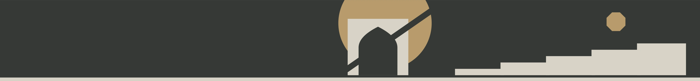

Новые направления
Две широкие ленты образуют геометрический узел.
Отдельно нарисованная композиция для выбранной стены.

Выберите стену и дизайн. Нажмите «Пройти автоматически» — камера сама пройдёт вдоль покрытия.
Для свободной прогулки нажмите «Гулять самому». На телефоне двигайтесь джойстиком и оглядывайтесь пальцем. На компьютере: WASD или стрелки, мышь с зажатой кнопкой для осмотра. Esc возвращает общий вид.
В режиме «Рисунок» показана отдельная композиция для выбранной стены. Все покрытия перерисованы без переноса дороги и окружения из фотографий. Это интерпретации эскизов; Исходные фотографии не публикуются. В 3D окружение и масштаб приблизительные. Все рисунки показаны как плоское покрытие. Используются оттенки смесей из каталога: Arktika, Grafit, Novvot, Black coffee и Zumrad.
Размеры и окружение восстановлены приблизительно по фотографиям. Это 3D-эскиз для выбора композиции; масштаб, оттенок и рисунок перед работами нужно сверить на объекте. Вечерняя подсветка показана как дополнительная идея.
Three.js · Шрифт Golos · nipplejs · OpenHouse 3D